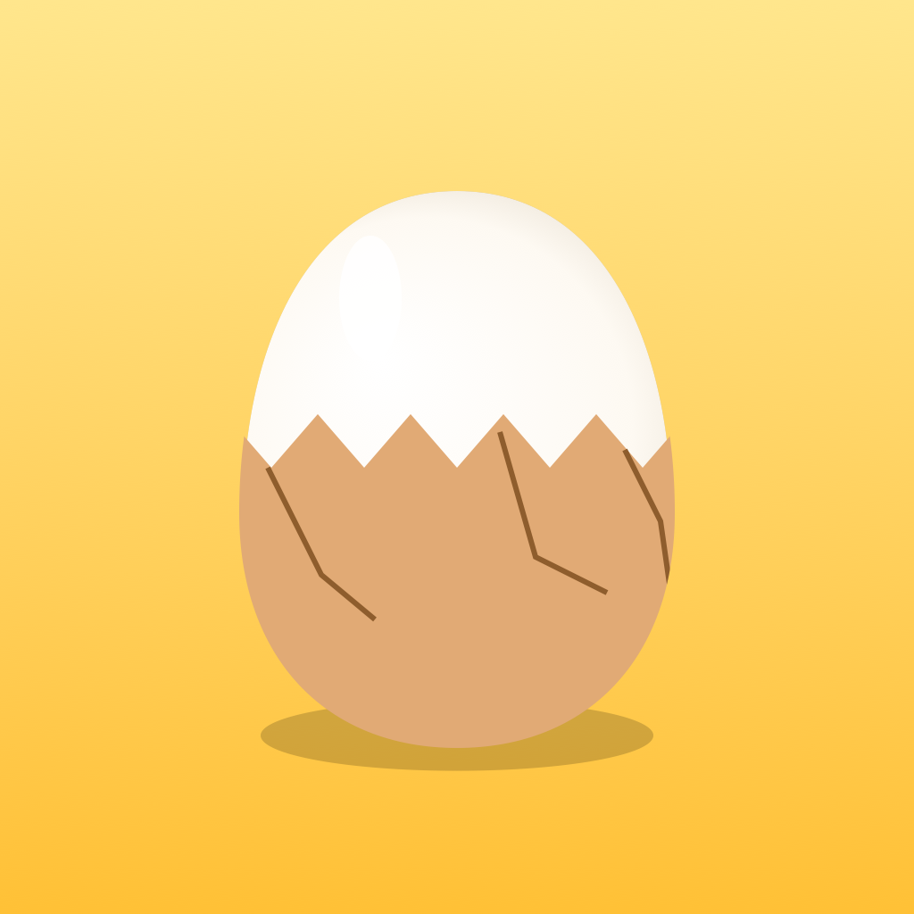

ゆでたまご剥き
ゆでたまごの殻をツルッと剥く3Dゲーム（iPhone）
遊び方
ゆでたまごの殻を、白身を削らずにきれいに剥きます。タイムと白身のきれいさでランクが決まります。
- ヒビを入れる：殻をタップします。連打しすぎると白身まで割れます
- 剥く：ヒビからドラッグして剥きます。速すぎ・急な方向転換は白身が削れます
- まわす：何もない所をドラッグするか2本指で、たまごを回します
- 12種類のたまご図鑑：うずら・烏骨鶏・イースターエッグ・金のたまごなど。毎日ちがう「今日のたまご」もあります
よくある質問
途中でやめたい
遊んでいる途中に左上の ❚❚ を押すと、つづける・はじめから・タイトルへもどる を選べます。
音を消したい
画面右上の ♪ ボタンで、音のオン・オフを切り替えられます。
新しいたまごが出ない
剥いた数やランク、半熟モードのクリアなどで、新しいたまごに出会えます。図鑑に条件が出ています。
記録を消したい・引き継ぎたい
記録はこの iPhone の中にだけ保存しています。アプリを削除すると記録も消えます。ほかの端末への引き継ぎにはまだ対応していません。
お問い合わせ
不具合やご要望は、メールでお知らせください。お使いの iPhone の機種と iOS のバージョンを書いていただけると助かります。